A/B 테스트
설계하기
가설 · 실험군과 대조군 · 무작위 배정
비전공자를 위한 바이브코딩 실습
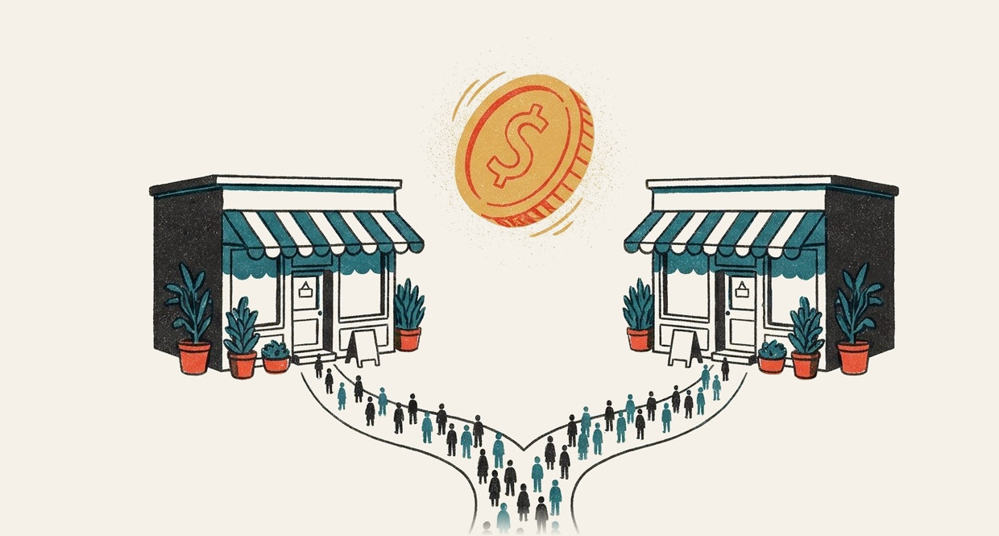
클릭 2배
버튼 효과로 볼 수 있는가?

학습 목표
1설계
가설 · 실험군/대조군 · 무작위 배정의 역할 설명
A/B 구성요소 6종으로 설계서 작성
2판단
전후 비교·자원자 비교의 한계 판별
설계 점검표로 실험 합격 여부 판정
3바이브코딩
AI 에이전트로 A/B 페이지 제작
새로고침 · 배정 비율 · 로그로 AI 결과 검증
오늘 다룰 내용
| 시간 | 블록 | 내용 |
|---|---|---|
| 10:00–10:10 | 도입 질문 | 새 버튼과 클릭 2배 |
| 10:10–11:10 | Part I 개념 | 전후 비교 한계 · 가설 · 무작위 배정 · 6요소 · 표본 크기 |
| 11:10–11:20 | 휴식 | |
| 11:20–11:50 | Part II 판단 | 설계 점검표 · 사례 판정 · 지표 고르기 · AI 함정 #8 |
| 11:50–12:40 | Part III 실습 | 명세 → AI 생성 → 관찰 → 수정 |
| 12:40–13:00 | 정리 | 한 장 요약 · 과제 브리핑 |
비교를
공정하게
전후 비교로 알 수 없는 것
대조군과 무작위 배정의 역할
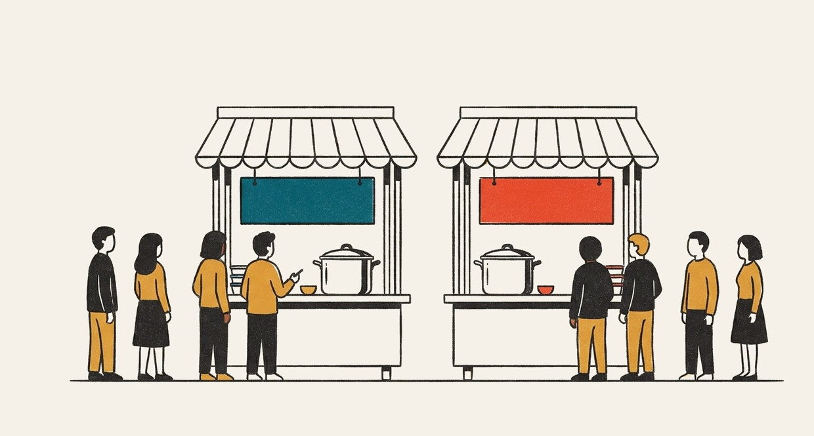
전후 비교의 한계
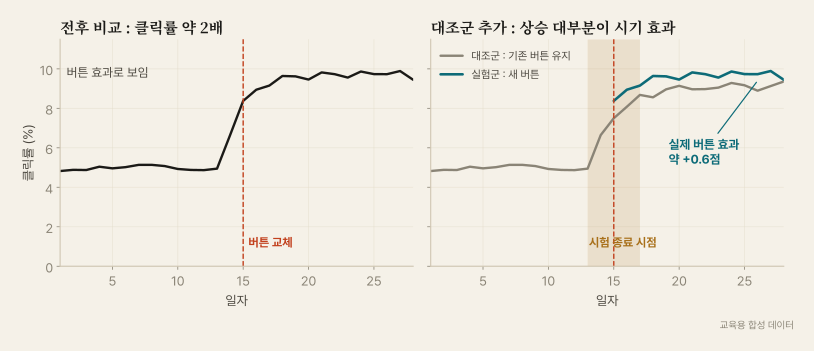
A/B 테스트 : 같은 시기 · 같은 조건 · 한 가지만 다르게
쌍둥이 분식집 : 맛·위치·날씨·손님 동일 · 메뉴판 색만 상이
매출 차이의 원인 후보 = 메뉴판 하나
- A = 기존안 · B = 변경안
- 같은 기간에 동시 운영 → 시기 효과 제거
- 사람을 난수로 나눔 → 사람 차이 쏠림 방지 (완전 일치는 아님)
- 남는 차이 = 변경 효과 + 우연
실험 용어 4개
- 처치Treatment
실험에서 일부러 바꾼 것 하나
버튼 문구를 «쿠폰 받기» → «오늘 점심 500원 아끼기»로 변경
- 실험군Treatment group
처치를 받은 집단 (B안)
새 문구 화면을 본 학생들
- 대조군Control group
처치를 받지 않은 비교 기준 집단 (A안)
없으면 «어차피 일어났을 변화»와 효과 구분 불가
- 지표Metric
성공 여부를 재는 숫자
클릭률 = 클릭한 학생 수 / 화면을 본 학생 수
앱 로그 · 설문 · 매출 기록
일상 속 A/B 예시
| 상황 | A (기존) | B (변경) | 지표 | 배정 단위 |
|---|---|---|---|---|
| 학습법 | 평소대로 복습 | 공부 후 퀴즈 10문제 | 2주 뒤 시험 점수 | 학생 |
| 알림 문구 | «강의자료 등록» | «오늘 자료 5분 요약» | 24시간 내 열람률 | 수강생 |
| 진열 위치 | 음료 안쪽 냉장고 | 음료 계산대 옆 | 매장당 음료 판매량 | 매장·요일 |
| 가격 표시 | «4,500원» | «4,500원 · 쿠폰 시 3,900원» | 주문 전환율 | 방문자 |
| 모집 포스터 | 활동 소개 중심 | 선배 후기 중심 | QR 스캔 후 신청률 | 건물별 게시판 |
| 유튜브 썸네일 | 얼굴 + 제목 | 결과 장면 + 제목 | 노출 대비 클릭률 | 시청자 |
왜 실무에서 실험하는가
제목 줄 길이 변경 하나로 매출 12% 증가
미국 내 연 1억 달러 이상 규모
사진·버튼 조합 변경 · 가입률 8.26% → 11.6% (원문 표기 +40.6%)
추가 기부 약 6천만 달러는 캠프 측 추정
긍정 결과를 낸 실험 비율
대부분의 아이디어 효과 없음 또는 역효과
전문가 직감도 자주 빗나감 → 의견을 증거로 바꾸는 절차가 A/B 테스트
가설 : 데이터 수집 전에 쓰는 두 문장
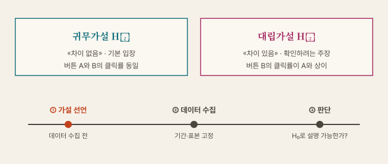
재판의 무죄 추정 : 일단 «차이 없음»으로 출발 · 증거가 충분할 때만 뒤집기
가설 문장 고치기
측정 불가
«새 디자인이 더 좋을 것»«쿠폰 문구를 바꾸면 효과가 있을 것»
«퀴즈 공부법이 도움이 될 것»
측정 가능
«B 화면의 가입 완료율이 A와 다를 것»«B 문구의 14일 클릭률이 A와 다를 것 (찾을 효과 +2점)»
«퀴즈 집단의 2주 뒤 시험 평균이 대조군과 다를 것»
| 빈칸 공식 | [대상]에게 [처치]를 적용하면 [기간] 동안 [지표]가 [기준]과 비교해 [방향·크기]로 변화 |
|---|
집단을 나누는 세 가지 방법
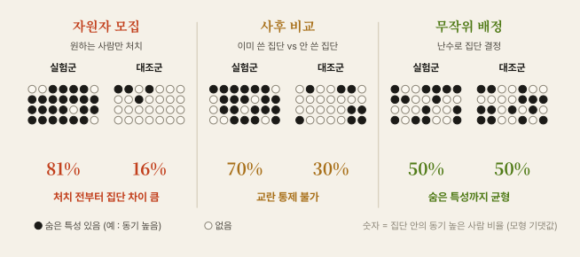
자원자 비교의 함정
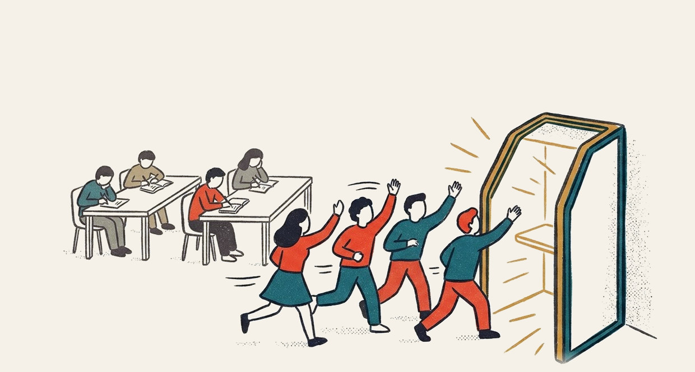
«새 공부법 신청자의 성적이 더 높음»
- 신청자 = 원래 의욕 높은 학생
- 공부법 없이도 성적이 높았을 가능성
- 효과와 의욕이 한 덩어리 → 분리 불가
| 같은 구조 | 섞여 있는 것 |
|---|---|
| 프리미엄 가입자 재구매율 | 원래 충성 고객 |
| 영양제 복용자 건강 수치 | 건강 관심 · 생활 습관 |
| 과외 수강생 성적 | 가정 환경 · 학습 동기 |
방식별 추정 효과 : 실제 효과는 같음
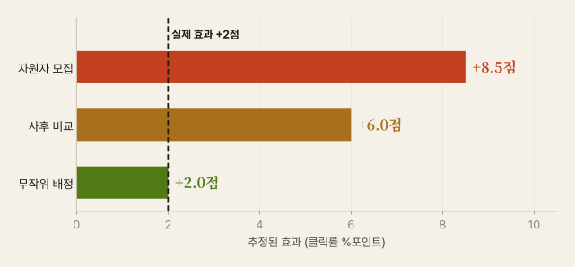
동전 던지기가 숨은 특성까지 나누는 장면
무작위 배정의 효과
제비뽑기 모둠 편성 : 키·성적·성격을 몰라도 인원이 많으면 양쪽 모둠이 비슷
- 알려진 교란 균형 : 학년 · 기기 · 이용 빈도
- 숨은 교란 균형 : 동기 · 기분 · 친구 영향
- 처치가 유일한 체계적 차이 → 인과 주장 가능
- 9주 문장 등급 «A가 B를 변화시킴»의 근거
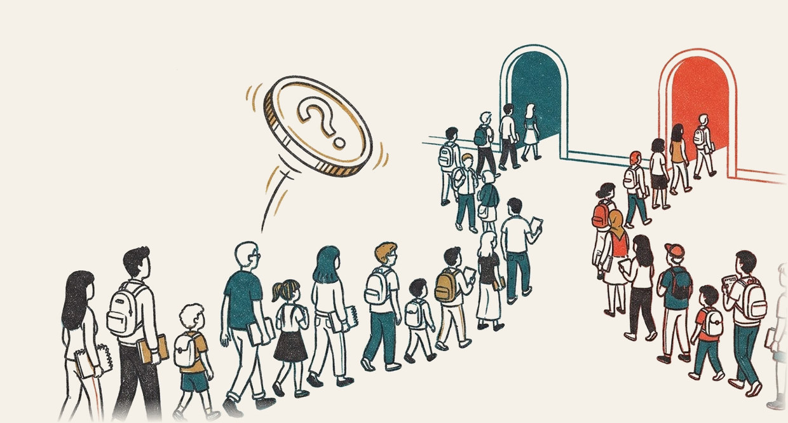
손으로 확인 : 12명 배정
| 학생 | 주당 공부시간 | 자원자 방식 | 제비뽑기 |
|---|---|---|---|
| 가 · 나 · 다 | 12 · 11 · 10 | 실험 · 실험 · 실험 | 대조 · 실험 · 대조 |
| 라 · 마 · 바 | 9 · 8 · 7 | 실험 · 실험 · 대조 | 실험 · 대조 · 대조 |
| 사 · 아 · 자 | 6 · 5 · 4 | 실험 · 대조 · 대조 | 대조 · 실험 · 실험 |
| 차 · 카 · 타 | 3 · 2 · 1 | 대조 · 대조 · 대조 | 실험 · 대조 · 실험 |
배정 방식 비교기
배정 단위 : 누구를 한 칸으로 볼 것인가
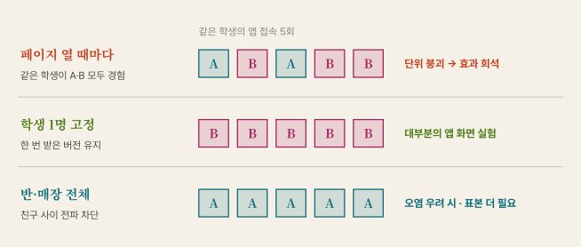
A/B 구성요소 6종 : 학식 쿠폰 앱 설계서
| # | 요소 | 질문 | 학식 쿠폰 앱 예 |
|---|---|---|---|
| 1 | 대상 | 누구에게 실험하는가 | 쿠폰 화면에 접속한 재학생 |
| 2 | 배정 단위 | 무엇을 한 칸으로 나누는가 | 학생 1명 · 첫 접속 때 고정 |
| 3 | 처치 | 무엇을 바꾸는가 | A «쿠폰 받기» · B «오늘 점심 500원 아끼기» |
| 4 | 지표 | 무엇으로 판단하는가 | 주 지표 클릭률 · 보조 지표 앱 종료율 |
| 5 | 기간 | 언제부터 언제까지인가 | 14일 · 요일 효과를 고려해 7일 단위 |
| 6 | 표본 크기 | 몇 명이 필요한가 | 집단당 3,841명 이상 (기준 10% · 찾을 효과 +2점) |
6개 중 하나라도 빠지면 설계서 미완성 · AI 요청에도 6개 전부 포함
작은 차이일수록 필요한 사람 급증
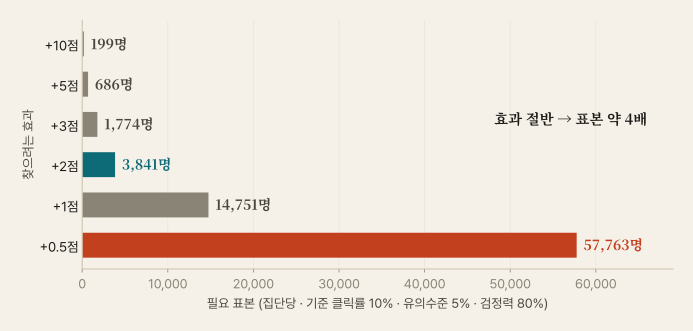
용어 · 점 = %포인트 · 유의수준 5% = 효과 없을 때 «유의» 오판 비율 · 검정력 80% = 진짜 효과를 10번 중 8번 포착
표본에서 기간으로
| 찾을 효과 | 군당 인원 | 하루 600명 기준 기간 | 판단 |
|---|---|---|---|
| +5점 | 686 | 3일 → 7일 | 가능 |
| +2점 | 3,841 | 13일 → 14일 | 이번 설계 |
| +1점 | 14,751 | 50일 | 학기 일정 확인 |
| +0.5점 | 57,763 | 193일 | 현실성 없음 |
- 요일별 이용 패턴 차이 → 최소 1주 단위
- 찾을 효과 = 이 정도면 바꿀 가치가 있는 최소 크기
- 계산은 AI · 입력값 3개 제공은 사람
사전 등록 : 시험 전 채점표 봉인

데이터를 보기 전에 기록할 것
| 주 지표 | 클릭률 1개 |
| 분석 방법 | 두 비율 차이 검정 · 양측 5% |
| 기간·표본 | 14일 · 집단당 3,841명 이상 |
| 실질 기준 | +2점 (바꿀 가치가 있는 최소 효과) |
| 중단 규칙 | 오류·부작용 발생 시만 중단 |
시험 전에 채점 기준 공개 · 답안 보고 기준을 바꾸는 일 차단
실험 윤리 : 동의 · 위험 · 철회
| 질문 | 확인 내용 |
|---|---|
| 동의 | 참여 사실 안내 · 수집 항목 고지 |
| 위험 | B안이 손해·불쾌감을 줄 가능성 |
| 철회 | 언제든 그만둘 방법 |
| 공정 | 가격 차별·건강·성적 불이익 여부 |
2014 페이스북 감정 실험 논란
약 69만 명 뉴스피드의 감정 게시물 노출 비율 조정 · 동의·이탈 기회 문제 제기
PNAS 게재 후 학술지가 «우려 표명»
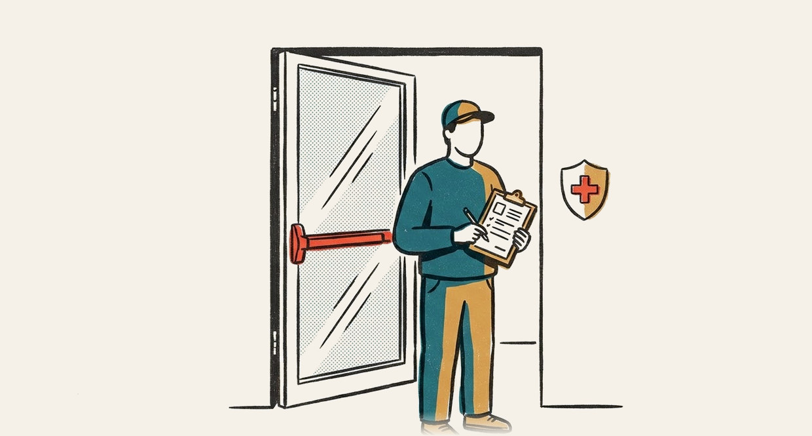
이 실험,
믿어도 되는가
설계 점검표 · 사례 판정 · 지표 고르기 · AI 함정 #8
설계 점검표 5문
| 항목 | 합격 | 불합격 예 |
|---|---|---|
| 배정 절차 | 난수 · 시드 또는 코드 기록 | 먼저 온 순서 · 담당자 임의 지정 |
| 단위 일관 | 배정·측정·분석 단위 동일 | 학생 배정 후 클릭 수 단위 분석 |
| 지표 사전 정의 | 계산식까지 문장화 | 결과 후 유리한 지표 선택 |
| 기간 고정 | 시작일·종료일·요일 포함 | 좋은 결과가 나온 날 종료 |
| 중단 규칙 | 중단 조건 사전 명시 | "유의해지면 중단" |
사례 판정 : 어디가 문제인가
| # | 사례 | 불합격 항목 |
|---|---|---|
| 1 | «오전에 온 손님은 A 메뉴판, 오후 손님은 B 메뉴판» | 배정 · 시간대와 처치 혼합 |
| 2 | «수업 A반은 새 교재, B반은 기존 교재 · 교수 다름» | 배정·조건 · 교수 차이 혼입 |
| 3 | «클릭, 결제, 체류 중 좋아진 지표로 보고» | 지표 · 사후 선택 |
| 4 | «3일째 B가 앞서기에 전체 적용» | 기간·중단 · 조기 종료 |
| 5 | «앱 켤 때마다 버튼이 랜덤, 학생별 클릭률 분석» | 단위 · 같은 학생이 A·B 경험 |
| 6 | «새 앱 설치 희망자 200명과 미설치자 200명 비교» | 배정 · 자원자 비교 |
무엇을 지표로 삼을 것인가
허무 지표 (Vanity)
숫자가 커도 다음 행동이 불분명
예 : 누적 앱 실행 횟수 · 한 명의 재접속 100번도 합산
실행 가능 지표 (Actionable)
숫자를 보면 고칠 곳이 결정
예 : 쿠폰 화면 → 사용 완료 전환율 10% → 화면 문구 수정
| 역할 | 뜻 | 학식 쿠폰 앱 |
|---|---|---|
| 주 지표 | 성패를 가르는 숫자 1개 | 버튼 클릭률 |
| 보조 지표 | 원인 이해용 | 쿠폰 실제 사용률 · 체류 시간 |
| 가드레일 | 나빠지면 안 되는 숫자 | 앱 종료율 · 결제 취소율 |
A/B 테스트가 맞지 않는 경우
| 상황 | 문제 | 대안 |
|---|---|---|
| 방문자 하루 30명 | 표본 부족 · 수개월 소요 | 큰 변화만 시험 · 사용자 인터뷰 병행 |
| 한 지역만 시행한 정책 | 사람별 무작위 배정 불가 | 시행 전후 + 비슷한 지역 비교 (이중차분) |
| 건강·안전 위험 | 윤리 문제 | 관찰 자료 분석 · 전문 심의 |
| 로고·브랜드 전면 교체 | 장기 효과 · 되돌리기 곤란 | 정성 조사 · 단계적 도입 |
| 친구 추천 기능 | 사용자끼리 영향 · 단위 오염 | 지역·학교 단위 배정 |
실험 불가 시 인과 주장 등급 하향 → «A가 B를 설명할 가능성» (9주 문장 등급)
무작위 배정 없는 A/B
«A/B 테스트 설계해줘» 한 줄이 놓치는 것들
한 줄 요청과 명세 요청
한 줄 요청
> 쿠폰 앱 A/B 테스트 설계해줘흔한 응답
• 버튼을 바꾼 뒤 지난달과 비교
• 또는 신규·기존 사용자로 나눠 비교
• «클릭률이 오르면 성공»
• 배정 방법·기간·표본 크기 언급 없음
명세 요청
> 쿠폰 앱 A/B 설계서 작성.6요소(대상·단위·처치·지표·기간·표본)를 표로.
배정은 학생 단위 난수 · 고정 방법을 코드로 제시.
기준 10%, 찾을 효과 +2점, 하루 600명으로 표본·기간 계산.
전후 비교·자원자 비교 금지. 빠진 정보는 질문.
왜 생기고 어떻게 찾는가
원인
- 요청에 배정 절차·단위·기간·지표 없음
- AI는 쉽게 얻을 수 있는 데이터 쪽으로 제안
- 문장은 그럴듯 · 설계 요건 검사 없음
진단 순서
- 구성요소 6종 체크 · 빠진 칸 표시
- 배정 코드의 난수 호출 위치 확인
- 실제 배정 비율 50:50 근접 여부
- 사전 특성표로 두 집단 비교
AI 답변의 말투가 아니라 배정 절차로 판정
AI 코드에서 가장 자주 보는 배정 오류
문제 : 새로고침마다 버전 변경
// 화면을 열 때마다 동전 던지기
const variant =
Math.random() < 0.5 ? "A" : "B";
showButton(variant);
log({ variant, event: "view" });
같은 학생이 A·B 모두 경험
방문자가 아닌 페이지뷰가 집계 단위로 변질
수정 : 첫 방문에만 결정 · 저장값 재사용
let visitor = load("ab_visitor");
if (!visitor) { // 처음 온 사람만
visitor = {
id: newId(),
variant: Math.random() < 0.5 ? "A" : "B"
};
save("ab_visitor", visitor);
}
showButton(visitor.variant);
log({ id: visitor.id, variant: visitor.variant,
event: "view" });
바이브코딩으로
A/B 페이지 제작
코드 작성은 AI · 명세와 검증은 사람

바이브코딩 작업 순환
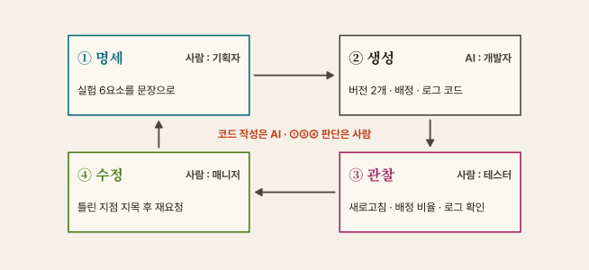
이번 주 명세
[목표]
학식 쿠폰 A/B 페이지 1개 제작 · 방문자별 버전 고정 · 클릭 로그 CSV 저장
[제약]
- A 문구 «쿠폰 받기» · B 문구 «오늘 점심 500원 아끼기»
- 배정은 난수 · 방문자당 첫 접속 때 1회만 결정 · 브라우저에 저장
- 실제 개인정보 입력칸 금지 · 방문자 번호는 임의 생성
[검증 조건]
- 새로고침 10회에도 같은 버전 유지
- «새 방문자» 버튼 → 새 번호와 새 배정
- 가상 방문자 1,000명 생성 시 A·B 비율 45~55%
- CSV 열 : id, variant, clicked, time · 방문자 1명당 1행
[비목표]
- 로그인, 서버 저장, 디자인 꾸미기, 유의성 검정(11주)
오늘의 실습 — 50분
| # | 활동 | 개념 |
|---|---|---|
| 1 | «A/B 테스트 설계해줘» 요청 → 빠진 항목 목록화 | 함정 #8 |
| 2 | 구성요소 6종 명세로 재요청 → 결과 비교 | 설계 요건 |
| 3 | 위 명세로 페이지 제작 → 난수 배정·균형 확인 | 무작위 배정 |
| 4 | 찾을 효과 +1 · +2 · +5점의 표본과 기간 비교 | 표본 크기 |
| 5 | 확장 : 중단 규칙·기간 사전 확정 문서 작성 | 사전 등록 |
배정 점검 : 코드를 몰라도 가능한 검증
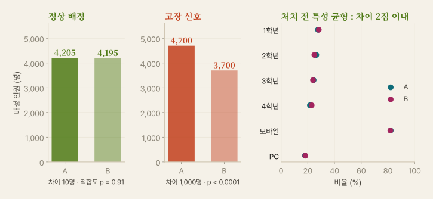
공식 과제 : 일상 속 A/B 테스트 설계
| 설계서 항목 | 작성 기준 |
|---|---|
| 질문·가설 | H₀ · H₁ 문장 |
| 구성요소 6종 | 표로 작성 · 칸 비움 금지 |
| 배정 방법 | 난수 도구 · 고정 방법 |
| 사전 등록 | 주 지표 1개 · 중단 규칙 |
| 윤리 점검 | 동의 · 위험 · 철회 |
예시 주제
동아리 모집 포스터 · 과제 알림 문구 · 카페 메뉴판 · 공부 시간대 · 쇼츠 썸네일
채점
명세 구체성 · 배정 타당성 · 표본 계산 근거 · AI 사용 기록
한 장 요약
| 개념 | 핵심 |
|---|---|
| 전후 비교 | 시기 효과와 처치 효과 구분 불가 → 동시 대조군 필요 |
| 가설 | H₀ 차이 없음 · H₁ 차이 있음 · 데이터 수집 전 선언 |
| 실험군·대조군 | 처치 외 조건 동일 · 같은 기간 동시 운영 |
| 무작위 배정 | 알려진 교란 + 숨은 교란 동시 균형 · 자원자·사후 비교는 과대 추정 위험 |
| 배정 단위 | 처치 경험이 섞이지 않는 단위 · 앱 실험은 대개 사람 1명 고정 |
| 구성요소 6종 | 대상 · 단위 · 처치 · 지표 · 기간 · 표본 크기 |
| 표본 크기 | 효과 절반 → 표본 약 4배 · 기준 10% · +2점 = 집단당 3,841명 |
| 사전 등록·윤리 | 주 지표·방법·중단 규칙 사전 기록 · 동의 · 위험 · 철회 |
| AI 함정 #8 | 사후 비교 제안 · 새로고침마다 랜덤 → 6종 명세 · 고정 배정 · 비율 점검 |
A/B 결과와 p값
B가 앞선 결과 · 진짜 효과인가 우연인가
학식 쿠폰 실험 결과표로 해석 연습